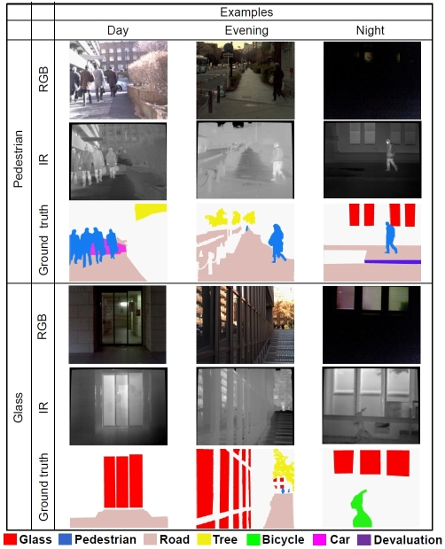

可視・赤外同軸画像認識

街中を移動する自律型ロボットのような自律移動システムにおいては、セマンティックセグメンテーションが重要である。様々な条件下でセグメンテーションを行うためには、1）夜間などの低視認性環境下でのロバストな認識能力、2）ドアや窓に用いられるガラスやアクリルなどの可視光を透過する物体の認識能力が必要となる。これらの要件を満たすためには、RGB画像と赤外線画像を同時に使用することが有効であると考えられる。可視光や赤外線の透過特性は物体によって異なるため、単に従来の意味分割の枠組みに当てはめるだけでは適用できない。例えば、ガラスの向こうに歩行者がいる場合、可視画像はガラスではなく歩行者を捉え、赤外線画像はガラスを捉える。本研究では、透過特性の違いに着目し、3つのストリーム構造を持つ新しいセマンティックセグメンテーション手法を提案する。本手法は、透過特性の違いによる撮像対象の違いを利用し、通常の非透過物体に対する有効な特徴量だけでなく、透明物体の認識に有効な特徴量も抽出する。さらに、可視・赤外同軸データセットである「coaxials」を新たに構築し、従来手法と比較して良好なセグメンテーション性能が得られることを実証した。
成果公開
- 高畑智之, 原田達也, “可視・長波長赤外同軸カメラを利用したガラス検出,” 第40回日本ロボット学会学術講演会 (RSJ2022), 2B1-03, 2022
- Atsuro Okazawa, Tomoyuki Takahata, and Tatsuya Harada, “Simultaneous transparent and non-transparent objects segmentation with multispectral scenes,” The 2019 IEEE/RSJ International Conference on Intelligent Robots and Systems (IROS2019), Macao, China, 4–8 November, pp. 4977–4984, 2019. [Proceedings]
- Coaxials dataset is available on github.